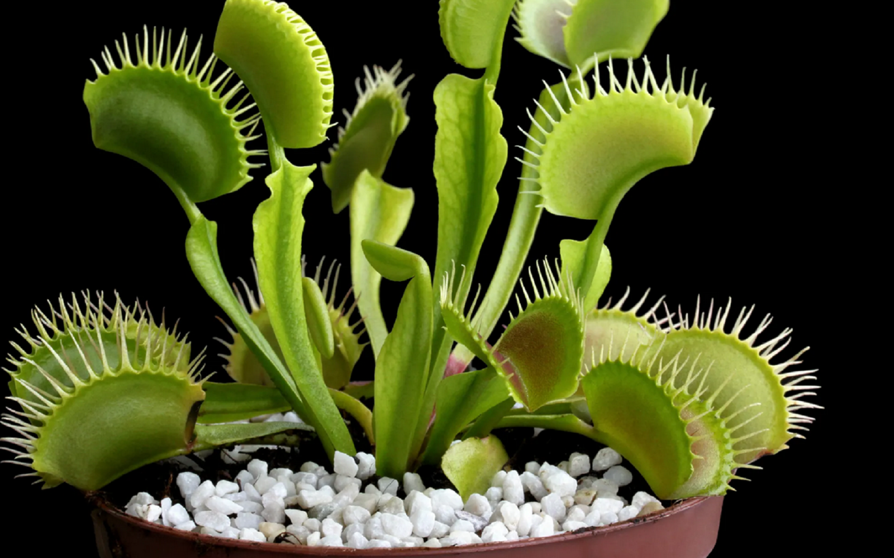
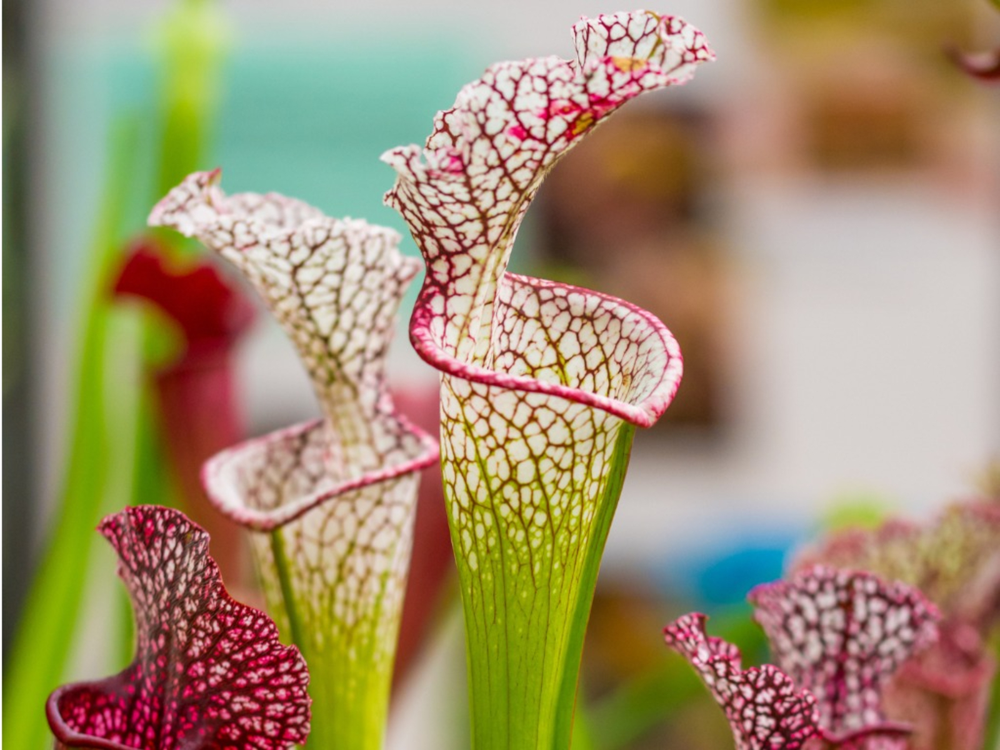
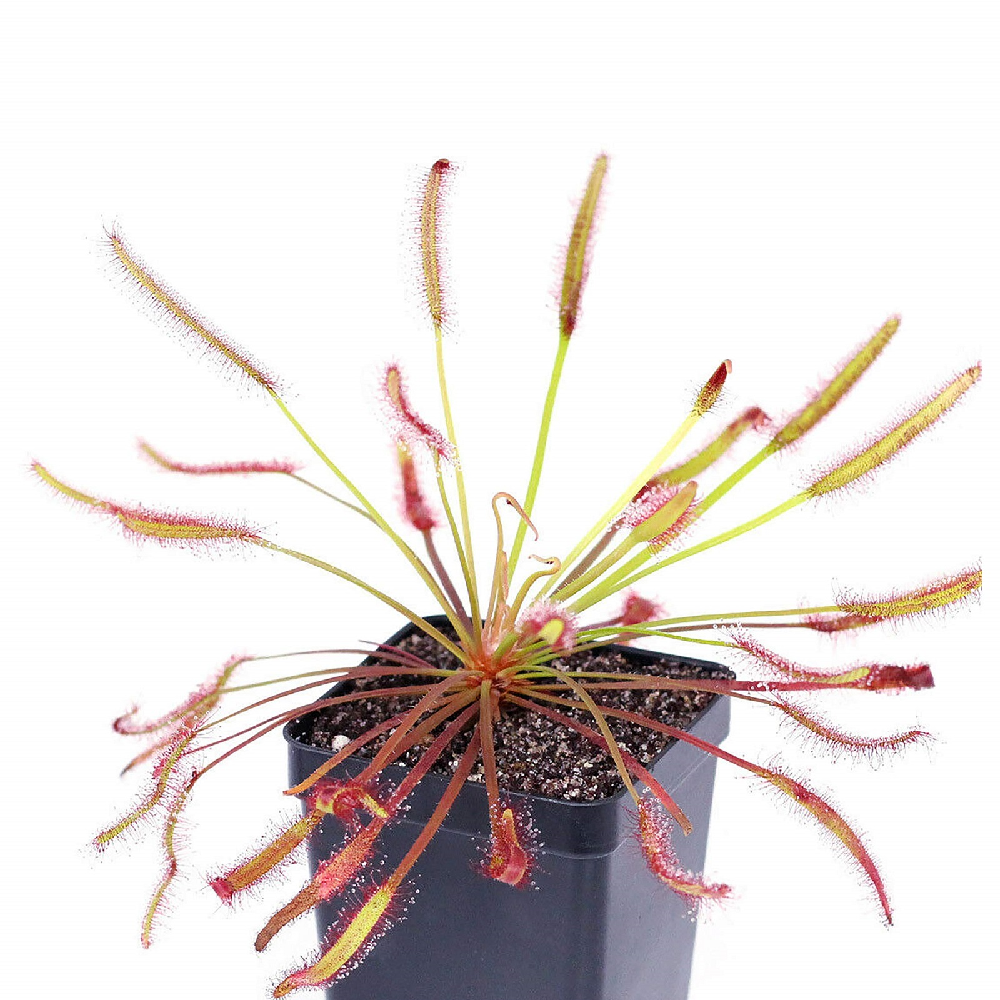

Home
Cart
Carnivorous Plants Retail Website
Pre Course Project

Venus Fly Trap
$14.00
Add to cart

Pitcher Plant
$50.00
Add to cart

Sundew
$34.00
Add to cart
Order in the next 30 minutes for free shipping!